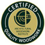
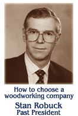

SALINA PLANING MILL, INC.
Salina Planing Mill
Salina Planing Mill is a leading manufacturer of architectural woodwork. What is "architectural woodwork"? It is custom designed and manufactured wood products including cabinetry, casework, fixtures, mouldings, paneling, doors, and various other special architectural elements. We create our product from the designs and specifications of architects and interior designers to meet the special needs for buildings. Architectural woodwork is used primarily in commercial facilities and high-end residences.
Many types of building facilities use our products. Some of these include medical clinics, hospitals, schools, financial institutions, office buildings, and hotels. Most projects are "new construction", some are remodels, and others are "historic replications".
Salina Planing Mill is a company with a long history. Established in 1908, we are nearing 100 years in business. Our name reflects the company's heritage in the construction industry. Many years ago, planing mills would purchase rough lumber from saw mills and plane it down to dimensioned lumber. Over the years, we evolved into the architectural woodwork business. Today, Salina Planing Mill is one of a select group of businesses that has earned the status as a "Certified" manufacturer by the industry's national organization, the Architectural Woodwork Institute.
Producing architectural woodwork requires a staff of highly qualified people, a well-equipped fabrication facility and a commitment to produce quality custom woodwork, delivered on time.
| MEMBERSHIP | ||
|---|---|---|
|  | Architectural Woodwork Institute Certified "Premium" Grade Manufacture, Finish and Installation |
 |
| Kansas Associated General Contractors | ||